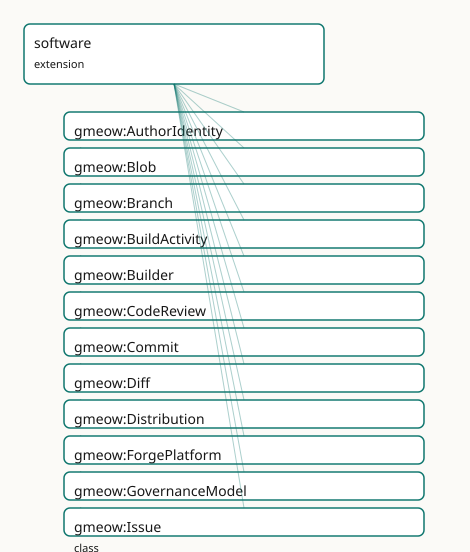

GMEOW Software Module
- IRI: https://blackcatinformatics.ca/gmeow/slices/software
- Tier: extension
Group: extensions
What This Slice Covers
This slice owns 106 terms and contributes 99 mapping or projection rows. Use it when its terms match the native fact you want to preserve; use the linkage tables to see how those facts leave GMEOW for consumer vocabularies.
Dependencies
gmeow:slices/attestationgmeow:slices/creative-worksgmeow:slices/entitiesgmeow:slices/eventsgmeow:slices/kernelgmeow:slices/languagegmeow:slices/namesgmeow:slices/provenancegmeow:slices/rightsgmeow:slices/tags
Consumers
- The five-facet software model: git-as-provenance, verifiable releases, this repo itself.
Local Map

Terms
Classes
| Term | Label | Definition |
|---|---|---|
gmeow:AuthorIdentity |
Author Identity | A recorded author or committer string in a version-control commit — the raw git bytes (Name |
gmeow:Blob |
Blob | A content-addressed blob of raw file content — the leaf of a Merkle source tree, independent of filename or path. Aligned to git blob objects and Software Heri... |
gmeow:Branch |
Branch | A mutable pointer to a line of development in a repository — a named reference that advances as new commits are added. An InformationObject, not an Event or En... |
gmeow:BuildActivity |
Build Activity | A software build process that transforms source code into one or more distribution artifacts. The build activity consumes a commit or repository and produces a... |
gmeow:Builder |
Builder | The build system or agent that performs a BuildActivity — e.g. GitHub Actions, GitLab CI, Jenkins, Buildkite, or a local make invocation. A SoftwareAgent scope... |
gmeow:CodeReview |
Code Review | The event of reviewing code changes for quality, correctness, and policy compliance — an event (not an Activity, because reviewing is observation-like) with a... |
gmeow:Commit |
Commit | A version-control commit — a content-addressed provenance event that records a change to a repository's history. The history facet of the five-facet model; dis... |
gmeow:Diff |
Diff | A patch or diff — an information object describing the changes between two commits (or two trees). Carries textual diff content and references the from- and to... |
gmeow:Distribution |
Distribution | A concrete distribution artifact of a software product — a tarball, wheel, binary, container image, or installer. The physical/bits facet of the release; ident... |
gmeow:ForgePlatform |
Forge Platform | A software forge or hosting platform — GitHub, GitLab, SourceHut, Codeberg, Gitea, etc. The platform as an entity, not any particular account or repository on... |
gmeow:GovernanceModel |
Governance Model | The governance model of a project — a VALUE vocabulary (individuals, never subclasses). Describes how decisions are made and who has authority. |
gmeow:Issue |
Issue | A tracked issue, ticket, or bug report in a software project — an InformationObject that may carry title, body, labels, and state. The event of its creation/cl... |
gmeow:MaintenanceStatus |
Maintenance Status | The maintenance status of a software project — a VALUE vocabulary (individuals, never subclasses). Answers the question 'is this maintained?' Standpoint-scoped... |
gmeow:Merge |
Merge | The event of merging one branch of development into another — an activity with a merge-base commit, a source branch or ref, a target branch, and a resulting me... |
gmeow:MergeRequest |
Merge Request | A proposed merge of one branch into another — an InformationObject carrying title, description, source branch, target branch, and review state. Aligned to GitH... |
gmeow:Package |
Package | A distributable software package — a named, versioned unit of software published through a package ecosystem (npm, PyPI, Cargo, Maven, etc.). The package descr... |
gmeow:Project |
Project | A social object representing an endeavour — an activity with purpose, participants, and duration, independent of any product, repository, or codebase. A projec... |
gmeow:Push |
Push | The event of pushing one or more commits to a remote repository — an activity with a target repository or ref, a pusher, and a timestamp. The event type is gme... |
gmeow:Ref |
Ref | A version-control reference — the generic superclass of Branch and any other named pointer into the commit graph. |
gmeow:Release |
Release | A software release — an event that produces a versioned software product, typically associated with a tag, a DOI, and one or more distribution artifacts. The e... |
gmeow:Repository |
Repository | A version-control repository — the location/hosting facet of a software project. Holds source code history, branches, tags, and refs. Distinct from the project... |
gmeow:RepositoryType |
Repository Type | The version-control system of a repository — a VALUE vocabulary (individuals, never subclasses). The set is open; a new VCS is a fresh individual, not a new cl... |
gmeow:Review |
Review | A code review or peer review of a merge request or commit — an InformationObject carrying review text, approval state, and requested changes. The reviewing act... |
gmeow:SLSALevel |
SLSA Level | The SLSA supply-chain level for build provenance — a VALUE vocabulary (individuals, never subclasses). Levels 1–4 correspond to the SLSA specification's increm... |
gmeow:SoftwareName |
Software Name | An appellation borne by a software project or product — a project name, product name, codename, or package name. Carries its own gmeow:nameLanguage and gmeow:n... |
gmeow:SoftwareProduct |
Software Product | A software work as an intellectual creation — the design, functionality, and behaviour of a program, library, or application, independent of any particular sou... |
gmeow:SoftwareProject |
Software Project | A project whose endeavour is the collaborative development of software. The social object facet only — distinct from the software product, the source codebase,... |
gmeow:SourceDirectory |
Source Directory | A content-addressed subdirectory within a source tree — a named container of files and nested directories. A specialization of gmeow:SourceTree for nested stru... |
gmeow:SourceFile |
Source File | A content-addressed source file — a named blob of text or binary content within a source tree. Aligned to Software Heritage Content and git blob objects by ref... |
gmeow:SourceNode |
Source Node | A content-addressed node in a source graph — the common kind for all objects that participate in a versioned source tree (files, directories, and recursive tre... |
gmeow:SourceTree |
Source Tree | A content-addressed directory tree of source code — the recursive Merkle structure that represents a snapshot of a project's files and subdirectories at a poin... |
gmeow:TreeEntry |
Tree Entry | A named pointer within a source tree — a file or directory entry carrying a name, a file mode, and a reference to a Blob or SourceTree. Corresponds to a single... |
Properties
| Term | Label | Definition |
|---|---|---|
gmeow:authorIdentityString |
author identity string | The raw author or committer bytes as they appeared in the commit object, typically 'Name |
gmeow:authorTime |
author time | The timestamp at which the author created the patch (xsd:dateTime). Distinct from committer-time and push-time (the four-clocks pattern, temporal module). |
gmeow:authoredBy |
authored by | The agent who authored the changes in a commit — the creative origin of the patch. Distinct from the committer (who applied the commit to the repository). Auth... |
gmeow:bugDatabase |
bug database | The issue/bug tracker of a software project — the doap:bug-database. Non-functional: a project may track issues in several places. Range open (an IRI). |
gmeow:buildConfigUri |
build config URI | The URI of the build configuration or workflow file that describes the build process — e.g. the URL of .github/workflows/release.yml or a Jenkinsfile. |
gmeow:buildOutput |
build output | The distribution artifact produced by a build activity. Non-functional: a build may produce multiple artifacts (tarball, wheel, binary, container image). |
gmeow:buildSource |
build source | The source commit or repository that a build activity consumes. Non-functional: a build may consume multiple commits (monorepo) or a repository at a specific r... |
gmeow:canonicalizedIdentity |
canonicalized identity | The current self-asserted agent to which a historical AuthorIdentity is understood to refer. Old and new identities coexist as co-equal standpoints, never merg... |
gmeow:cloneUrl |
clone URL | A URL from which the repository can be cloned. Non-functional: multiple protocols (https, ssh, git) may be available. |
gmeow:commitAncestor |
commit ancestor | The transitive closure of parentCommit — any ancestor commit in the DAG. Transitive, non-simple: kept out of all cardinality / functional axioms to preserve OW... |
gmeow:commitAuthorIdentity |
commit author identity | The recorded author identity of a commit — the raw historical bytes. Distinct from gmeow:authoredBy, which points to the canonical agent currently understood t... |
gmeow:commitCommitterIdentity |
commit committer identity | The recorded committer identity of a commit — the raw historical bytes. Distinct from gmeow:committedBy, which points to the canonical agent currently understo... |
gmeow:commitDescendant |
commit descendant | The transitive closure of the inverse of parentCommit — any descendant commit in the DAG. Transitive, non-simple: kept out of all cardinality / functional axio... |
gmeow:commitInRepository |
commit in repository | The repository in which a commit occurred. Functional: a commit belongs to exactly one repository (forks are separate repositories with their own history). |
gmeow:commitTree |
commit tree | The source tree (directory snapshot) that a commit records. Functional: a commit points to exactly one tree. |
gmeow:committedBy |
committed by | The agent who committed the changes to the repository — the person or process that created the commit object. Distinct from the author (who wrote the patch). |
gmeow:committerTime |
committer time | The timestamp at which the committer created the commit object (xsd:dateTime). Distinct from author-time and push-time. |
gmeow:diffFrom |
diff from | The base commit of a diff — the 'before' state. Functional: a diff has exactly one base commit. |
gmeow:diffTo |
diff to | The target commit of a diff — the 'after' state. Functional: a diff has exactly one target commit. |
gmeow:distributionFormat |
distribution format | The format of a distribution artifact — e.g. 'tar.gz', 'wheel', 'docker-image', 'exe'. |
gmeow:downloadPage |
download page | The download page of a software project — the doap:download-page. Non-functional. Range open (an IRI). |
gmeow:governanceModel |
governance model | The governance model of a project — a value from the open gmeow:GovernanceModel vocabulary (BDFL, foundation, meritocracy, DAO, …). Non-functional: a project m... |
gmeow:hasDistribution |
has distribution | Relates a package to one of its concrete distribution artifacts. Non-functional: a package may have multiple distributions (tarball, wheel, binary, container). |
gmeow:hasRelease |
has release | Relates a project to one of its releases. Non-functional: a project has many releases over time. |
gmeow:hasRepository |
has repository | Relates a project to a version-control repository that hosts its codebase. Non-functional: a project may have several repositories (monorepo, mirrors, forks). |
gmeow:hasSLSALevel |
has SLSA level | The SLSA supply-chain integrity level (1–4) asserted by an attestation. Non-functional: competing assessments from different verifiers coexist (Principle 9). |
gmeow:hasSoftwareName |
has software name | Relates a project or product to a structured gmeow:SoftwareName it bears; the software-scoped specialization of gmeow:hasAppellation. Non-functional — a projec... |
gmeow:hostedAt |
hosted at | The forge or hosting platform where a repository is hosted. Non-functional: a repository may be mirrored on multiple platforms. |
gmeow:mailmapEntry |
mailmap entry | The canonical.mailmap line for an agent — typically 'Canonical Name canonical@example.com'. This is the source value from which the.mailmap projection is g... |
gmeow:maintenanceStatus |
maintenance status | The maintenance status of a project — a value from the open gmeow:MaintenanceStatus vocabulary. Non-functional: competing assessments coexist (Principle 9). |
gmeow:materializationDepth |
materialization depth | The number of levels of Merkle tree to materialise as triples for this repository. 0 = no tree materialisation (commits and refs only); 1 = root tree only; 2 =... |
gmeow:mergeBase |
merge base | The common ancestor commit from which a merge operation derives — the best common ancestor of the source and target branches. Non-functional: in complex merge... |
gmeow:mergeSource |
merge source | The source ref (branch or tag) being merged in a merge event. Non-functional: octopus merges may have multiple sources. |
gmeow:mergeTarget |
merge target | The target ref (branch or tag) into which a merge event merges the source. Functional: a merge has exactly one target ref. |
gmeow:packageOf |
package of | Relates a package to the software product it distributes. |
gmeow:parentCommit |
parent commit | A parent commit from which this commit was derived — the provenance spine of the commit DAG. Non-functional: a merge commit has multiple parents; the initial c... |
gmeow:pointsToCommit |
points to commit | The commit that a ref (branch, tag, or other pointer) currently points to. Non-functional: a ref may point to one commit at a time, but that commit changes as... |
gmeow:programmingLanguage |
programming language | A programming language a software project is implemented in — a gmeow:Language (the language slice's ProgrammingLanguage). Non-functional: a project uses sever... |
gmeow:projectHomepage |
project homepage | The homepage of a project — the doap:homepage / schema:url of a software project. Functional; range open (an IRI). |
gmeow:projectIdentifier |
project identifier | An identifier for a project as an activity — typically a RAiD (ISO 23527). Distinct from product/release identifiers (DOI, ISO 26324). Non-functional: a projec... |
gmeow:projectLicense |
project license | The license under which a project releases its software. Non-functional: dual-licensing and license transitions over time are valid. |
gmeow:pushTarget |
push target | The repository or ref that a push event targets. Non-functional: a single push operation may target multiple refs in the same repository. |
gmeow:releaseDoi |
release DOI | The Digital Object Identifier (DOI) assigned to a software release — typically minted through DataCite, Zenodo, or a similar PID registry. Non-functional: a re... |
gmeow:releaseOf |
release of | The project that a release belongs to. Functional: one project per release event. |
gmeow:releaseTag |
release tag | The tag associated with a release. Functional: a release is typically cut from exactly one tag. |
gmeow:releaseVersion |
release version | The version designation of a release — e.g. 'v1.0.0', '2.1.0-beta.3'. Not functional: competing version schemes may coexist (Principle 9). |
gmeow:repositoryType |
repository type | The version-control system of a repository — a value from the open gmeow:RepositoryType vocabulary (git, hg, svn, fossil, …). Functional: a repository has exac... |
gmeow:reviewCommit |
review commit | The specific commit under review in a code review event. Non-functional: a review may span multiple commits. |
gmeow:reviewOf |
review of | The merge request that a code review event is about. Non-functional: a review event may cover multiple related merge requests. |
gmeow:treeEntryMode |
tree entry mode | The git file mode of a tree entry — e.g. '100644' (regular file), '100755' (executable), '040000' (directory), '160000' (submodule), '120000' (symlink). Functi... |
gmeow:treeEntryName |
tree entry name | The file or directory name of a tree entry — e.g. 'README.md', 'src'. Functional: one name per entry. |
gmeow:treeEntryObject |
tree entry object | The content-addressed object (Blob or SourceTree) that a tree entry points to. Functional: one object per entry. |
gmeow:webUrl |
web URL | The human-readable web URL of the repository (e.g. the GitHub project page). |
Individuals
| Term | Label | Definition |
|---|---|---|
gmeow:eventTypeBuild |
build | The event of building software from source into distribution artifacts. |
gmeow:governanceBDFL |
BDFL | Benevolent dictator for life — a single individual has final decision authority. |
gmeow:governanceCorporate |
corporate | Governed by a single company or corporate sponsor. |
gmeow:governanceDAO |
DAO | Decentralized autonomous organization — governance via on-chain voting and smart contracts. |
gmeow:governanceFoundation |
foundation | Governed by a nonprofit foundation or consortium with formal bylaws. |
gmeow:governanceMeritocracy |
meritocracy | Decisions are made by those who have demonstrated contribution and expertise. |
gmeow:repoTypeFossil |
fossil | The Fossil distributed version control system with built-in wiki and issue tracking. |
gmeow:repoTypeGit |
git | The Git distributed version control system. |
gmeow:repoTypeHg |
mercurial | The Mercurial distributed version control system. |
gmeow:repoTypeJJ |
jujutsu | The Jujutsu (jj) version control system. |
gmeow:repoTypePijul |
pijul | The Pijul version control system based on patch theory. |
gmeow:repoTypeSVN |
subversion | The Apache Subversion centralized version control system. |
gmeow:slsaLevel1 |
SLSA Level 1 | Provenance exists — the build process is documented. |
gmeow:slsaLevel2 |
SLSA Level 2 | Signed provenance — the build runs in a hosted environment with signed output. |
gmeow:slsaLevel3 |
SLSA Level 3 | Hardened build — the build runs in a hardened, hermetic environment with reproducible steps. |
gmeow:slsaLevel4 |
SLSA Level 4 | Two-person review + hermetic, reproducible build with comprehensive audit trail. |
gmeow:statusAbandoned |
abandoned | The project has been abandoned by its maintainers with no successor identified. |
gmeow:statusActive |
active | The project is under active development with frequent releases. |
gmeow:statusDeprecated |
deprecated | The project is no longer recommended; users should migrate to a successor. |
gmeow:statusEOL |
end of life | The project has reached end-of-life; no further updates of any kind are planned. |
gmeow:statusMaintained |
maintained | The project receives bug fixes and security updates but may not see new features. |
Linkages
- Rows: 99
- Projection profiles:
codemeta,doap,foaf,mailmap,prov,schema-org,slsa,vcard - External vocabularies:
codemeta,dcmitype,doap,foaf,forgefed,https,prov,rdf,schema,spdx,swh,vcard,wd
| Source | Kind | Profile | Predicate/Relation | Target | Evidence |
|---|---|---|---|---|---|
gmeow:Blob |
equivalence | - |
skos:closeMatch | swh:Content | gmeow-software.sssom.tsv; gmeow:eqSw013; confidence 0.9 |
gmeow:Commit |
equivalence | - |
skos:closeMatch | forgefed:Commit | gmeow-software.sssom.tsv; gmeow:eqSw011; confidence 0.85 |
gmeow:Commit |
equivalence | - |
skos:closeMatch | swh:Revision | gmeow-software.sssom.tsv; gmeow:eqSw016; confidence 0.9 |
gmeow:Issue |
equivalence | - |
skos:closeMatch | forgefed:Ticket | gmeow-software.sssom.tsv; gmeow:eqSw012; confidence 0.8 |
gmeow:Package |
equivalence | - |
skos:closeMatch | spdx:Package | gmeow-software.sssom.tsv; gmeow:eqSw007; confidence 0.85 |
gmeow:Release |
equivalence | - |
skos:closeMatch | doap:Version | gmeow-software.sssom.tsv; gmeow:eqSw003; confidence 0.8 |
gmeow:Release |
equivalence | - |
skos:closeMatch | swh:Release | gmeow-software.sssom.tsv; gmeow:eqSw017; confidence 0.9 |
gmeow:Repository |
equivalence | - |
rdfs:subClassOf | doap:GitRepository | gmeow-classes.sssom.tsv; gmeow:eqClasses032; confidence 1 |
gmeow:Repository |
equivalence | - |
skos:closeMatch | doap:Repository | gmeow-software.sssom.tsv; gmeow:eqSw002; confidence 0.85 |
gmeow:Repository |
equivalence | - |
skos:closeMatch | forgefed:Repository | gmeow-software.sssom.tsv; gmeow:eqSw010; confidence 0.85 |
gmeow:Repository |
equivalence | - |
skos:closeMatch | schema:codeRepository | gmeow-software.sssom.tsv; gmeow:eqSw006; confidence 0.85 |
gmeow:Repository |
equivalence | - |
skos:closeMatch | swh:Origin | gmeow-software.sssom.tsv; gmeow:eqSw018; confidence 0.85 |
gmeow:SoftwareName |
equivalence | - |
skos:broadMatch | schema:name | gmeow-names.sssom.tsv; gmeow:eqNames053; confidence 0.6 |
gmeow:SoftwareProduct |
equivalence | - |
skos:closeMatch | codemeta:SoftwareSourceCode | gmeow-software.sssom.tsv; gmeow:eqSw009; confidence 0.8 |
gmeow:SoftwareProduct |
equivalence | - |
skos:closeMatch | schema:SoftwareApplication | gmeow-classes.sssom.tsv; gmeow:eqClasses031; confidence 0.7 |
gmeow:SoftwareProduct |
equivalence | - |
skos:closeMatch | schema:SoftwareApplication | gmeow-software.sssom.tsv; gmeow:eqSw005; confidence 0.8 |
gmeow:SoftwareProduct |
equivalence | - |
skos:closeMatch | schema:SoftwareSourceCode | gmeow-classes.sssom.tsv; gmeow:eqClasses030; confidence 0.8 |
gmeow:SoftwareProduct |
equivalence | - |
skos:closeMatch | schema:SoftwareSourceCode | gmeow-software.sssom.tsv; gmeow:eqSw004; confidence 0.8 |
gmeow:SoftwareProject |
equivalence | - |
skos:closeMatch | dcmitype:Software | gmeow-dublin-core.sssom.tsv; gmeow:eqDcType006; confidence 0.85 |
gmeow:SoftwareProject |
equivalence | - |
skos:closeMatch | doap:Project | gmeow-classes.sssom.tsv; gmeow:eqClasses029; confidence 0.7 |
gmeow:SoftwareProject |
equivalence | - |
skos:closeMatch | doap:Project | gmeow-software.sssom.tsv; gmeow:eqSw001; confidence 0.75 |
gmeow:SoftwareProject |
equivalence | - |
skos:closeMatch | wd:Q7397 | gmeow-wikidata.sssom.tsv; gmeow:eqWikidata004; confidence 0.7 |
gmeow:SourceFile |
equivalence | - |
skos:closeMatch | spdx:File | gmeow-software.sssom.tsv; gmeow:eqSw008; confidence 0.9 |
gmeow:SourceFile |
equivalence | - |
skos:closeMatch | swh:Content | gmeow-software.sssom.tsv; gmeow:eqSw014; confidence 0.85 |
| ... | ... | ... | ... | ... | 75 more rows |
Guide
Software — the five-facet de-conflation of the project domain
Slice:
https://blackcatinformatics.ca/gmeow/slices/software· tier: extensionProject≠ Product ≠ Codebase ≠Repository≠ History — five identities, never one class.
DOAP's original sin was collapsing the endeavour, the product, the repo, and the history
into one class. This slice corrects it: each facet is separately identified, separately
classed, and never bridged by subclassing or equivalence. DOAP is aligned by reference
as a lossy downcast, never imported (Principle 5). The slice is aggressively reuse-first:
contribution comes from creative-works' Contribution relator (the flat gmeow:developer
property is removed — Principle 6, greenfield: the inferior element does not survive its
replacement), events and provenance from their own slices, attestation and signatures from
the trust stack. The Principle-15 consumer is the five-facet software model
(git-as-provenance, verifiable releases — and this repository itself, which
the slice describes when GMEOW dogfoods its own citation and release chain.
Facet 1 — the endeavour
gmeow:Project
A social object — purpose, participants, duration — independent of any product, repo, or
codebase. An endurant, not a process: it persists and bears identity (RAiD-style
gmeow:projectIdentifier) while being realised through events. Carries
gmeow:maintenanceStatus and gmeow:governanceModel from open value vocabularies
(Principle 9 — maintenance judgements are standpoint-scoped: one community's "abandoned"
is another's "stable"). gmeow:SoftwareProject is the software SubKind, re-parented
from Work to Project in the de-conflation.
Facet 2 — the product
gmeow:SoftwareProduct
The software as intellectual creation — design, functionality, behaviour — a
specialization of gmeow:Work on the WEMI spine, independent of any repository or
artifact. Distributed through gmeow:Package (the named, versioned ecosystem unit) and
gmeow:Distribution (the concrete tarball/wheel/image, identified by content digest).
Facet 3 — the codebase
gmeow:SourceNode
The common kind for content-addressed source objects, aligned by reference to the git
object model and the Software Heritage graph: gmeow:SourceTree (Merkle directory
snapshot), gmeow:SourceFile, gmeow:SourceDirectory, gmeow:Blob (bytes only — the
name lives in the gmeow:TreeEntry that points to it, exactly as in git).
gmeow:materializationDepth on a repository bounds how much Merkle tree becomes triples —
a projection boundary, not a deletion (Principle 10); deep traversal stays in native git
or SWHID APIs.
Facet 4 — the location
gmeow:Repository
The hosting facet: history, branches, tags, refs. One gmeow:repositoryType (open VCS
vocabulary: git, hg, svn, fossil, jj, pijul), hosted at one or more gmeow:ForgePlatforms
(mirrors are non-functional), with cloneUrl/webUrl literals. Aligned by reference to
Software Heritage Origin and ForgeFed.
Facet 5 — the history
gmeow:Commit
A content-addressed provenance event (gmeow:Activity). gmeow:parentCommit (a
sub-property of wasDerivedFrom) is deliberately non-functional — merges have many
parents, the root has none; gmeow:commitAncestor/commitDescendant give transitive DAG
traversal and are kept non-simple, out of all cardinality axioms. Author and committer are
held apart twice over: authoredBy vs committedBy (canonical agents) and authorTime
vs committerTime (the four-clocks pattern).
gmeow:Release
An event that produces a versioned product — never the product itself. Functional
gmeow:releaseOf ties it to its project; releaseVersion, releaseTag, and
gmeow:releaseDoi (non-functional — multiple registrars coexist, Principle 9) identify
it. Collaboration events (gmeow:Push, gmeow:Merge, gmeow:CodeReview) and artifacts
(gmeow:Issue, gmeow:MergeRequest, gmeow:Review, gmeow:Diff) follow the same
event-vs-information-object discipline: the Review document is not the CodeReview
event that produced it.
gmeow:BuildActivity
The verifiable-release chain (a build consumes gmeow:buildSource (commit or
repository) and produces gmeow:buildOutput distributions, performed by a gmeow:Builder
(a SoftwareAgent — GitHub Actions, Jenkins, a local make). Integrity claims ride on
attestations via gmeow:hasSLSALevel (open SLSALevel vocabulary, levels 1–4);
signatures and transparency-log entries are reused from the attestation/trust slices,
never redeclared.
gmeow:AuthorIdentity
Immutable history vs current identity (the raw git bytes (Name <email>,
via gmeow:authorIdentityString) recorded by commitAuthorIdentity /
commitCommitterIdentity, linked to the present self-asserted agent through
gmeow:canonicalizedIdentity. Old and new identities are co-equal standpoints, never
merged (Principle 9); superseded ones carry gmeow:displayable false (Principle 10). The
.mailmap file is a generated projection from gmeow:mailmapEntry, not canonical
source (Principle 4).
Solver layer & alignment
DAG analytics beyond the asserted transitive closure — merge-base computation, blame,
diff derivation, Merkle re-hashing — belong to the solver layer (Principle 12); the graph
records the objects and their digests. Alignments are all by reference (Principle 5):
git object model, Software Heritage (Content/Directory/Revision/Origin), ForgeFed, SLSA,
PROV-O, and the DOAP downcast. Depends on attestation, kernel, creative-works,
entities, events, language, names, provenance, rights, and tags.
Project homepage and language
gmeow:projectHomepage · gmeow:programmingLanguage
gmeow:projectHomepage (functional) is the project's homepage →
doap:homepage / schema:url. gmeow:programmingLanguage points at a first-class
gmeow:Language (the language slice's ProgrammingLanguage), non-functional →
doap:programming-language / schema:programmingLanguage.